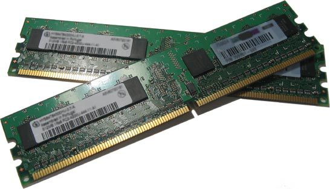

RAM stands for Random Access Memory. This is a bit of a misnomer, since most (all) computer memory may be considered “random access.” RAM is the “working memory” in the computer system
RAMs generally fall into two categories: static RAM (also known as SRAM) and dynamic RAM (also known as DRAM). SRAMs use pairs of logic gates to hold each bit of data. SRAMs are the fastest form of RAM available, require little external support circuitry, and have relatively low power consumption. Their drawbacks are that their capacity is considerably less than DRAM, while being much more expensive. Their relatively low capacity requires more chips to be used to implement the same amount of memory. A modern PC built using nothing but SRAM would be a considerably bigger machine and would cost a small fortune to produce. (It would be very fast, however.)
DRAM uses arrays of what are essentially capacitors to hold individual bits of data. The capacitor arrays will hold their charge only for a short period before it begins to diminish. Therefore, DRAMs need continuous refreshing, every few milliseconds or so. This perpetual need for refreshing requires additional support and can delay processor access to the memory. If a processor access conflicts with the need to refresh the array, the refresh cycle must take precedence.
DRAMs are the highest-capacity memory devices available and come in a wide and diverse variety of subspecies. Interfacing DRAMs to small microcontrollers is generally not possible, and certainly not practical. Most processors with large address spaces include support for DRAMs. Connecting DRAMs to such processors is simply a case of “connecting the dots” (or pins, as the case may be). For those processors that do not include DRAM support, special DRAM controller chips are available that make interfacing the DRAMs very simple indeed.
Many processors have instruction and/or data caches , which store recent memory accesses. These caches are (often, but not always) internal to the processors and are implemented with fast memory cells and high-speed data paths. Instruction execution normally runs out of the instruction cache, providing for fast execution. The processor is capable of rapidly reloading the caches from main memory should a cache miss occur. Some processors have logic that is able to anticipate a cache miss and begin the cache reload prior to the cache miss occurring. Caches are implemented using very fast SRAM and are most often used in large systems to compensate for the slowness of DRAM.